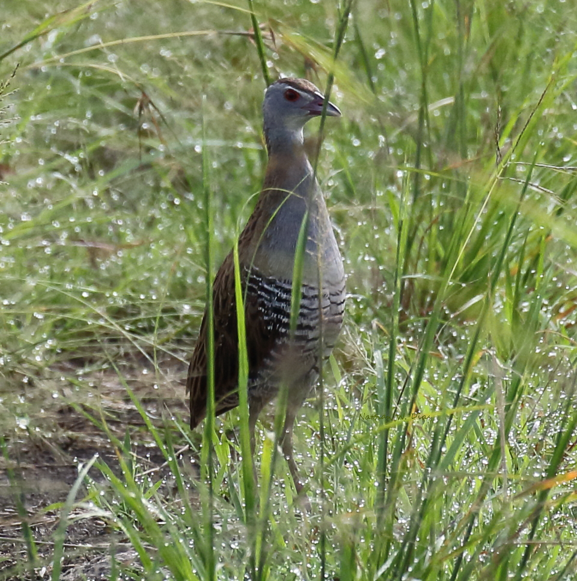
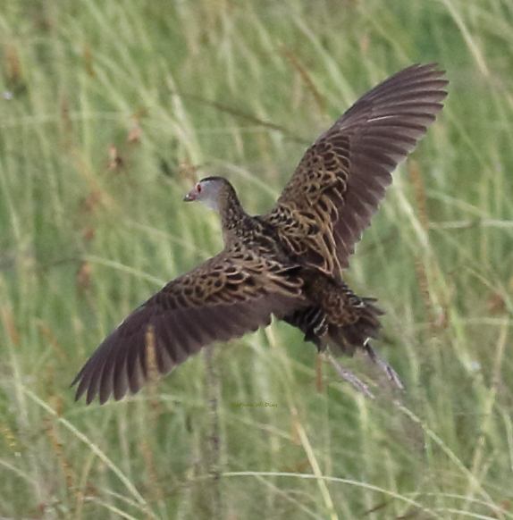

From: Nate Dias <offshorebirder@gmail.com>
Date: 2016-50-26 09:01
Subject: African Crake sightings and photos from the Mara
I had the privilege of birding Mara North Conservancy for a few days
last week with Ben Mugambi.
In addition to many other nice sightings: we were treated to
surprisingly long views of an African Crake on January 20 darting in
and out of an overgrown grassy tire track, and of a January 23 bird in
flight that flushed at the approach of our vehicle.
Photos of each are attached to this email.
The walking bird was near Elephant Pepper Camp - just east of the
little wet area downhill in front of the camp. The flying bird was in
another damp tallgrass area - about 2/3 of the way between Offbeat
Mara Camp and Kicheche Mara Camp.
We also had a couple of individuals close at hand calling back and
forth in the main reserve - while we were eating lunch near Topi
Plains.
When Ben first spotted the walking bird in the grass, at first we
thought it might be a Corncrake - which really got my pulse rate up!
But African Crake was certainly a welcome find.
Regards,
Nathan Dias

